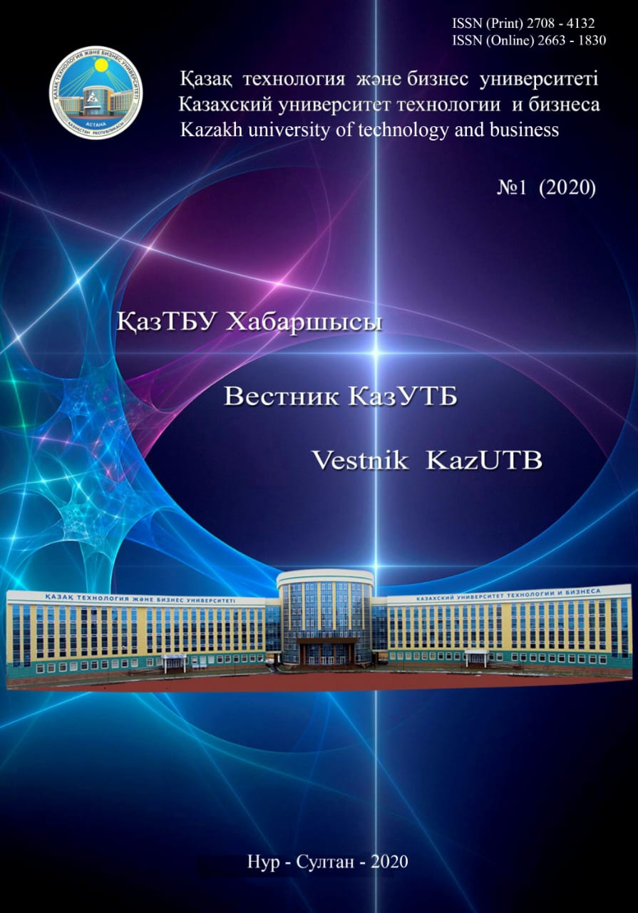

 В статье раскрывается педагогическая система, основанная на духовно-нравственных добродетельных ценностях в философско-педагогическом и социально-этическом наследии Абу Насыра аль-Фараби.
Систематизированы идеи ученого по вопросам методологии педагогики, дидактики, воспитания, психологии и методики. Эти идеи проиллюстрированы основными категориями, такими как «добродетельный город», «интеллектуальная добродетельность», «этническая
добродетельность», «методология», «дидактика», «психология», «воспитание», «методика», «научение», «разум», «рассудительность», «счастье». Педагогическое наследие аль-Фараби рассматривается с позиций философии как науки современности. Дидактика
Аль-Фараби включает такие понятия, как «цель обучения», «основные концепции дидактики», «принципы обучения» и «качества учителя». Теория воспитания аль-Фараби включает следующие категории: цель, законы, принципы воспитания, содержание – методы
воспитания, средства, результаты воспитания. В теории воспитания большое значение придается этическим понятиям. Автор рассматривает подход аль-Фараби к понятиям «счастье» и «добродетели». Отдельно систематизировано направление семейного воспитания:
ролей женщин и мужчин, взаимоотношений хозяина и слуг, взаимоотношений родителей-детей, отношению к имуществу и трудового воспитания. Автор систематизирует логические связи как цепочки категорий в педагогической теории аль-Фараби: уровни/места/локации
образования «государство – город – семья», образователи – «правитель – глава семьи – члены семьи – наставники», пути образования – «преподавание – учение – воспитание – обучение философии – занятие наукой», и др. В заключении автор обобщает
научные школы кафедры педагогики и образовательного менеджмента, проводимые направления исследований по педагогике аль-Фараби. Ключевые слова: ренессанс, педагогика, методология, концепция, мировоззрение, исследователь, дидактика, обучение,
научение, воспитание, ум, счастье, разум, рассудительность, учитель, каллиграфия, музыка, психология, добродетельность, наследие.